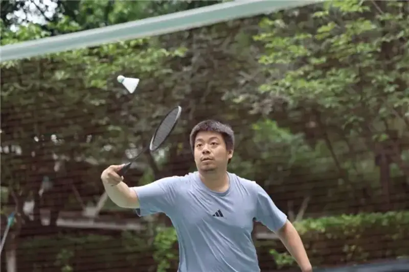
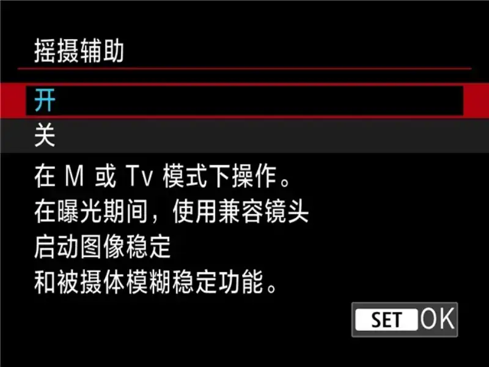
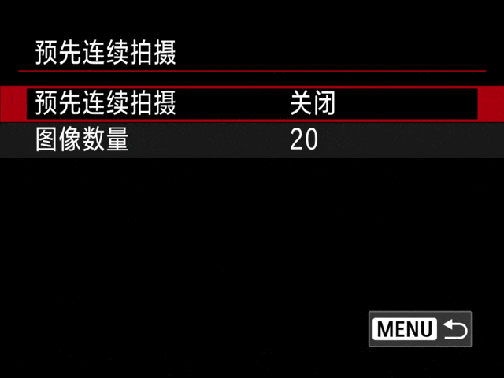
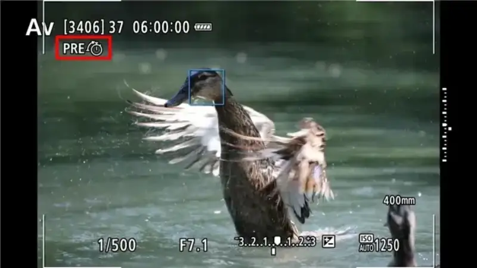
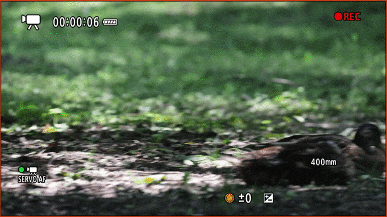
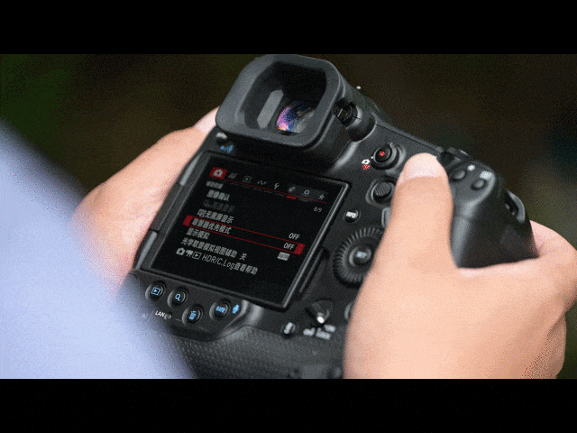

2024717, Canon released its flagship EOS R mirrorless camera EOS R1， , a strong tool for pros in many fields. A year later, Canon released firmware EOS R1 for 1.1.2 , an upgrade that adds features for focus, burst, and usability and further improves shooting. Today we look at what firmware 1.1.2 brings to this flagship camera.
CanonEOS R1
CanonEOS R1It uses a newly developed about 2420 -pixel full-frame back-illuminated stacked sensor with the DIGIC X image processor and a newly developed DIGIC Accelerator acceleration processor, forming the Accelerated Capture（ acceleration capture) system, which improves autofocus, video, and data handling. It gives pros in many fields an even better shooting experience.
CanonEOS R11.1.2 firmware.
This Canon EOS R11.1.2 upgrade includes, but is not limited to:：
·It adds a selectable expandable servo autofocus [Case special] setting, especially useful for subjects behind a net in sports such as badminton or volleyball.
·It adds a selectable [ panning assist] setting. When panning with a compatible lens, image stabilization and subject blur correction apply during exposure.
·It adds the ability to set the number of shots in pre-continuous shooting mode.
·It improves autofocus tracking of hard-to-focus subjects during video recording.
To show the real effect of the new firmware features, we field-tested several functions and see what the new firmware brings to the Canon 1.1.2 .EOS R1
·It fixes an issue where, in movie mode with [ pre-record] on and a card larger than 2TB , the movie could not record.
·It fixes an issue where setting the still-photo/ movie recording switch to [ silent shutter toggle] or [ off]， and updating to firmware 1.1.0 caused the camera to fail.
·A new Case special item in servo focus
In this 1.1.2 firmware upgrade, Canon added a Case special option in servo focus. It improves focus tracking of athletes behind the net in volleyball, tennis, and badminton. For photographers who often shoot these sports, this is a very practical upgrade.

CaseScreen recording of the special option
With the Case special option on, even with a net in the foreground, the camera locks fast and accurately onto the person. This helps catch clear hitting shots and greatly improves the keeper rate in tennis, volleyball, and badminton, so photographers can focus on recording great moments.
With Case special off

With Case special off
These real shots were taken during our test of the EOS R1 firmware. With the 1.1.2 special option on, the camera focuses through the net onto the person. With the Case fast burst, you can easily record a badminton serve and return without losing focus from large body movement or focus drifting onto the net.EOS R1
· panning assist
In sports photography, panning is a common technique. For racing, panning highlights speed and gives a faster feel. It tests timing and control of shutter and aperture. The Canon EOS R1 firmware. With the 1.1.2 firmware upgrade adds panning assist for EOS R1 , to help photographers shoot clear panning images more easily.

We tested the Canon EOS R1 with panning assist off and on to see the effect.
This photo was taken with panning assist off. With the EOS R1 aperture and shutter combo, it gives a dynamic cycling image. Because the camera moves fast to track the rider, on zooming in the subject is still somewhat soft and detail is not clear.M
Before panning assist
Zooming in shows clear shake
The next photo was taken with the Canon EOS R1 panning assist on. With the camera moved fast to track the rider, the image is dynamic, and on zooming in the face and helmet are clear. This shows how much panning assist helps for sports shots, letting photographers shoot better high-speed subjects such as racing.
After panning assist
Zooming in shows very clear detail on the person
·Set the pre-burst count
CanonEOS R1It supports pre-burst, recording up to 20 shots before the shutter press. This ensures the moment is caught, but it also creates many keepers to delete, taking storage and adding post-sorting work. The new 1.1.2 firmware lets you set the pre-burst count, so you can tune it to the subject, cut wasted shots, save storage, and make sorting easier.

CanonEOS R1Screen recording of the pre-burst menu

The icon in the red box means pre-burst is on
·When shooting video, autofocus tracking improves for hard-to-focus subjects.
For video, with hard-to-focus subjects, Canon improved the EOS R1 autofocus tracking. It keeps tracking the subject for accurate focus.

The GIF image above was taken with the firmware-upgraded Canon 1.1.2 paired with the EOS R1 lens, shooting a resting wild duck from afar. The duck feathers are close in color to the ground. From far away, the Canon RF100-500mm F4.5-7.1 L IS USM easily identifies the duck, and even when a passerby briefly blocks the lens, focus stays on the duck body and head, for a better video focus experience.EOS R1
·Viewfinder priority mode
CanonEOS R1The 1.1.2 firmware adds a viewfinder priority mode. As the name suggests, once it is on, the rear sensor lights the electronic viewfinder as soon as it detects a person, so you can shoot.

For fast scenes in sports, wildlife, or news, time is the most costly thing. In the past, when an event suddenly happened, we had to: raise the camera to the eye, wait for the viewfinder sensor, light the viewfinder, and start composing and focusing. These steps may take only a fraction of a second, but that is often when the decisive moment is missed. This feature lets photographers stay focused on the scene and catch every fleeting moment.→→→
·In short
The 1.1.2 firmware upgrade fixes BUG and adds practical features to the Canon EOS R1 , widening its shooting ability and unlocking more of the flagship potential of the Canon EOS R1 . For pros in news, sports, or wildlife, these features give a smoother, faster workflow. If you use the Canon EOS R1 , this firmware is well worth upgrading to.